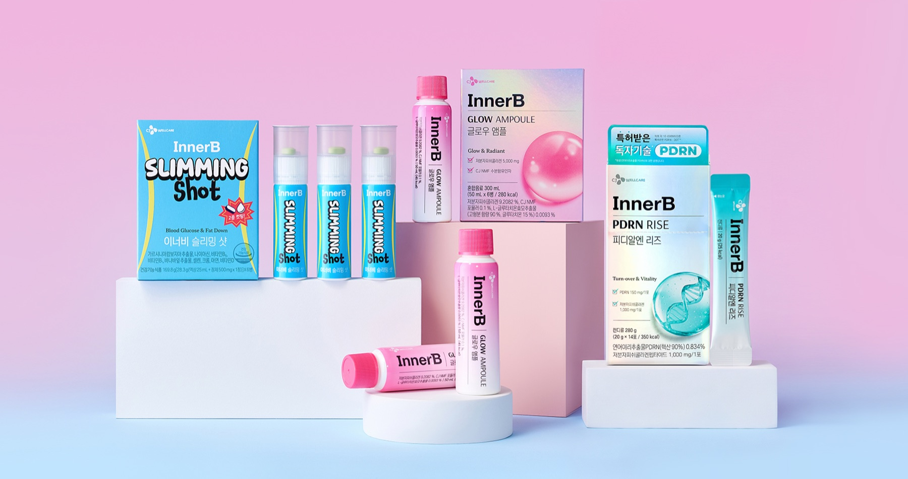
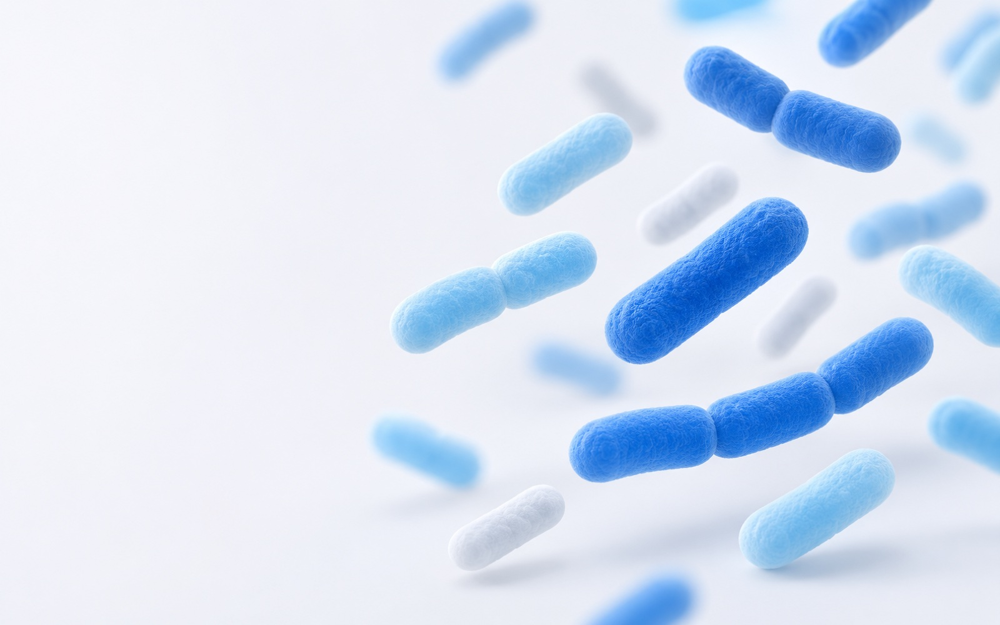
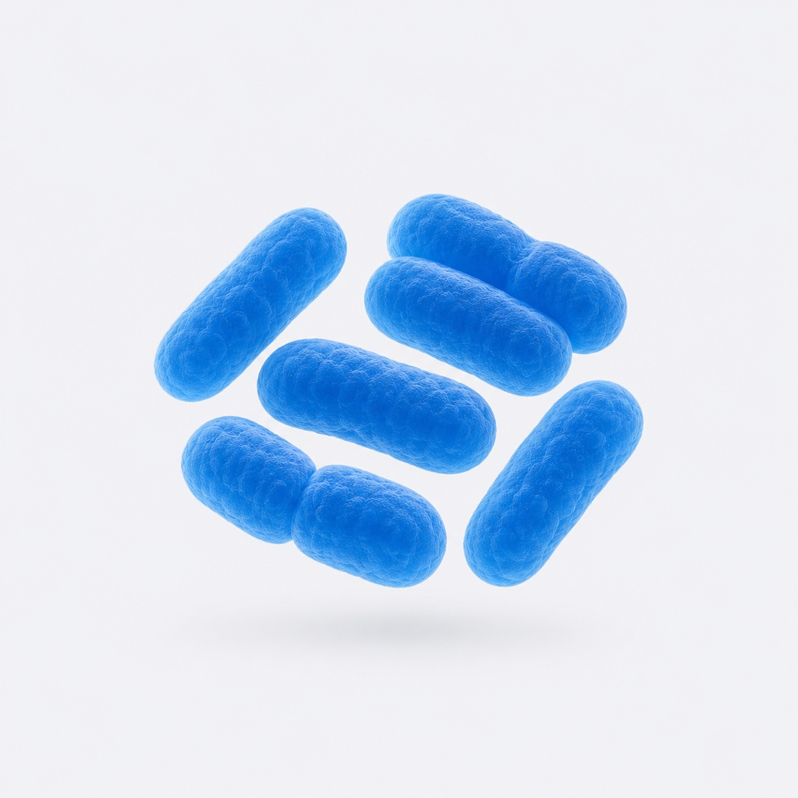
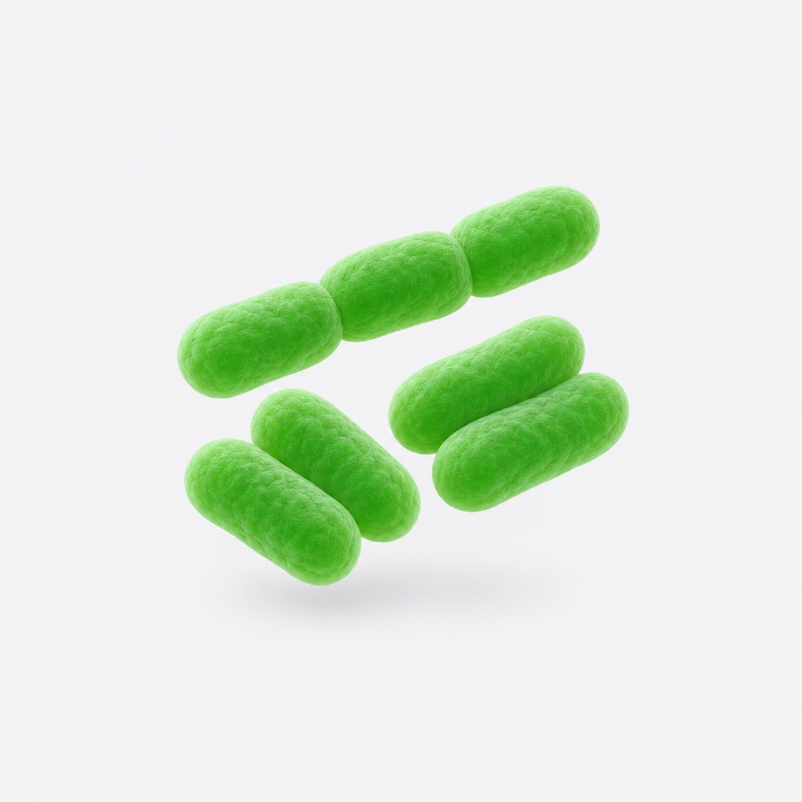
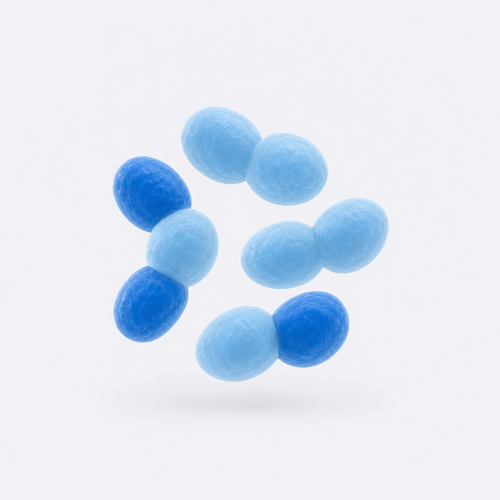
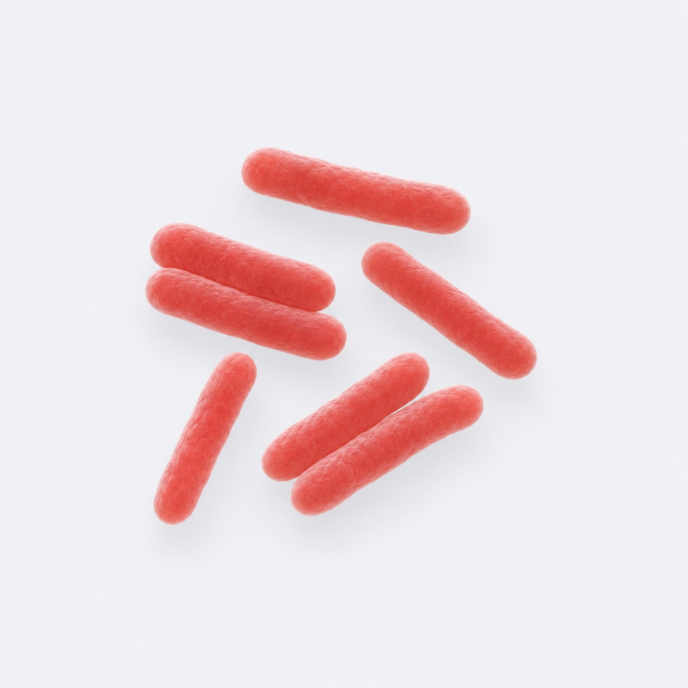

CJ바이오사이언스 · CJ R&D01 · Technology
마이크로바이옴 연구 · 기술
CJ 마이크로바이옴 R&D 센터의 20여 년 유산균 연구에 CJ바이오사이언스의 정밀 분석 기술을 더해 유익균과 소재를 발굴하고 검증합니다.
- 균주 발굴: 김치 유래 유산균 3,500여 개
- 정밀 분석: MAC · CJRB-101 협업 연구
- 과학적 검증: 세포 · 비임상 · 인체적용시험
Science for every day
CJ는 김치 속 미생물의 다양성에 주목해 3,500여 개의 유산균을 확보했습니다. 그 연구에 CJ바이오사이언스의 마이크로바이옴 기술을 더해, 당신의 하루에 맞는 웰니스로 완성합니다.
From Kimchi to Health
김치는 다양한 미생물이 함께 만들어가는 우리나라의 대표적인 발효식품입니다. CJ는 다양한 김치에서 유산균을 분리하고, 균주 하나하나의 특성과 기능을 연구해 왔습니다.
그 가운데 우수한 특성을 가진 균주를 선별하고,
과학적 연구를 통해 각각의 가능성을 검증해 왔습니다.
60년
CJ의 발효기술
20년+
장내
마이크로바이옴 연구
3,500+
김치 유래 유산균
Technology → Product → Customer Value
CJ바이오사이언스의 마이크로바이옴 기술, CJ웰케어의 제품력, 고객의 일상. 세 단계가 끊김 없이 이어지도록 설계합니다.
CJ바이오사이언스 · CJ R&D01 · Technology
CJ 마이크로바이옴 R&D 센터의 20여 년 유산균 연구에 CJ바이오사이언스의 정밀 분석 기술을 더해 유익균과 소재를 발굴하고 검증합니다.

CJ웰케어02 · Product
검증된 균주와 기능성 소재를 고민별 제품으로 설계하고,
기획부터 출시까지 전 과정을 직접 관리합니다.

고객03 · Customer Value
특별한 날이 아닌 매일의 습관으로. 아침에 눈을 뜨는 순간부터 잠드는 밤까지 일상 전체를 케어합니다.
CJLP133은 김치에서 유래한 Lactiplantibacillus plantarum 균주로, 지속적인 연구와 인체적용시험을 통해 피부 건강에 대한 가능성을 검증해 왔습니다. 식품의약품안전처로부터 ‘면역과민반응에 의한 피부 상태 개선에 도움을 줄 수 있음’의 기능성을 인정받은 개별인정형 원료입니다.
11편
논문
14건
특허
2013
국내 개발 균주 최초 개별인정형
CJLP133이 담긴 제품
Microbiome Research
인체에 유익한 마이크로바이옴과 프로바이오틱스를 연구하여 건강한 삶에 도움이 되는 새로운 기능성과 균주를 발굴합니다. 수많은 연구 데이터와 최신 과학기술을 활용하여 유망 균주를 찾고, 실험과 연구를 통해 효과를 검증합니다.

One Origin. Distinct Strains.
같은 종의 유산균이라도 균주에 따라 고유한 특성과 기능적 가능성은 달라질 수 있습니다. CJ는 균주 수준의 차이에 주목해 왔습니다.

피부 건강
Lactiplantibacillus plantarum
면역 · 피부
Lactiplantibacillus plantarum

장 건강
Lactiplantibacillus plantarum

장-면역 축
Leuconostoc mesenteroides

대사 건강
Latilactobacillus sakei
Featured Human Studies
Pediatric Allergy
and Immunology
2012 · 23:667–673
CJLP133118명12주이중맹검 RCT
CJLP133 섭취군에서 위약군 대비 SCORAD의 유의한 차이가 관찰되었습니다.
자세히 보기Nutrients
2022 · 14(2):389
CJLP24324명2개월이중맹검 RCT
배변 증상과 장 염증 관련 지표를 평가한 탐색적 인체적용시험입니다.
자세히 보기Nutrients
2021 · 13(4):1368
CJLP5528명 분석12주RCT
피지 · 수분 등 피부 상태 관련 지표를 섭취 전후로 평가한 무작위 대조 인체적용시험입니다.
자세히 보기Research Partners
20년 이상 유산균 연구에 매진해 온 전문 기관. 상온에서도 살아있는 유산균을 보장하는 독자 기술을 보유하고 있습니다.
마이크로바이옴 전문기업. 정밀 분석 기술과 R&D 역량으로 맥플랜(MAC)과 CJRB-101 연구를 함께합니다.
전립소에 적용한 SHPro®는 농촌진흥청과 국내 연구진이 공동 개발한 원료입니다. 인체적용시험은 연세대 세브란스병원과 한림대 동탄성심병원이 공동으로 진행했습니다.

미생물의 영양원인 MAC(Microbiota-Accessible Carbohydrates)을 일상형 제품 형태로 상용화했습니다.

CJ바이오사이언스가 축적해 온 마이크로바이옴 R&D 역량이 집약된 대표 균주로, ‘RB101 유산균&효소’에 적용했습니다.
Innovation Process
01
국내외 건강기능성 소재 탐색 및 소비자 요구 조사, 새로운 제품 기회 발굴
02
원료의 안전성 · 기능성 · 품질 검토, 제품 콘셉트와 차별화 포인트 개발
03
맛 · 형태 · 품질 · 안정성 최적화, 생산 · 품질관리 부서와 협업
04
소비자가 쉽게 이해할 수 있는 제품 정보 제공, 출시 전 품질 검증
개별인정형
과학기술포장 대통령상
장영실상
FDA NDI 승인
산업통상자원부 장관상
Evidence at a Glance
안내균주 정보와 연구 요약은 기존 CJ웰케어 홈페이지 R&D 자료와 보도자료를 인용했습니다. 건강기능식품은 질병의 예방 및 치료를 위한 의약품이 아닙니다.
 바이오코어 500억 유산균
바이오코어 500억 유산균 피부면역 유산균
피부면역 유산균